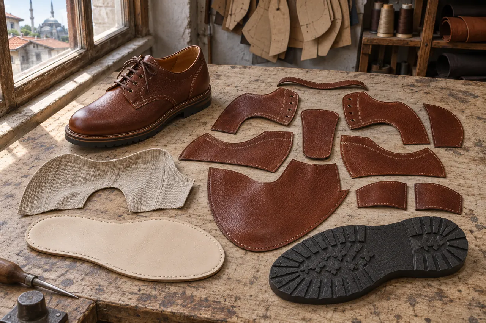

An EU retailer receives a sample from a Turkish shoemaker. The box says leather, the tongue carries a brand stamp, and an adhesive square under the arch shows three tiny symbols. Can the buying team approve the order? Start by separating three questions. What forms the outside of the shoe, what lines the inside, and what material makes up the sole that contacts the ground? A shopper must be able to associate each answer with the correct part. A plausible description of the pair as a whole gives the importer little basis for signing off the label.
The EU footwear labelling directive sets the material information for consumer footwear, including ordinary new shoes such as the lace-up in this example. Check intended use first. Protective footwear, worn second-hand footwear and toy footwear are among the exclusions. A supplier that makes both fashion boots and protective boots may use the same last or photograph for two different specifications. Ask how the particular model will be sold, then document the applicable route before requesting artwork from the factory.
Lay out the three parts before opening the artwork file
Set the finished shoe beside the upper pattern, lining pieces, sock and outsole specification. Under Annex I, the upper is the outer face of the structural element attached to the sole. The lining and sock occupy the inside, including the lining of the upper and the insole as described in the directive. The outsole is the bottom component subject to abrasion in use and attached to the upper. A merchandising photograph usually shows the outside clearly and conceals the component that the foot actually touches.
Ask the pattern maker to mark the boundaries on photographs of the sample. A narrow strip across the instep might reinforce a seam, or it might form a substantial structural panel. The rule for the upper disregards accessories and reinforcements such as buckles, edging, tabs, eyelet stays and ornamentation. Record why a disputed piece was included or excluded. The fact that a piece looks decorative in a catalogue does not establish its function. Examine stitching, construction drawings and the underlying assembly.
Make a separate file for materially different variants. A navy and a tan shoe may share a model name despite the navy version using a textile quarter where its tan counterpart uses leather. Ask the supplier to identify variants with identical construction and materials, and to flag exceptions in writing. An ordering system can link those groups to a common artwork revision while ensuring that a late colour substitution triggers another review.
Use surface area for the upper and inside, volume for the outsole
Article 4 sets an eighty per cent test for each relevant part. For the upper, examine the surface area after excluding the relevant accessories and reinforcements. For the lining and sock, assess the surface area of that component. For the outsole, evaluate the volume of its constituent materials. Where a single material reaches at least eighty per cent, the label identifies that material. If none reaches the threshold, identify the two main materials for that part. A proportion by purchase cost, weight or number of cut pieces answers a different question.
Take an illustrative loafer with an eligible upper surface of two hundred square centimetres. Leather accounts for one hundred and sixty square centimetres and woven textile accounts for forty. Leather reaches exactly eighty per cent. Now consider a second version with one hundred and fifty-eight square centimetres of leather and forty-two of textile. The shares are seventy-nine and twenty-one per cent. The upper row of that version must identify both materials. Rounding the first share up to eighty because the merchandising database accepts only multiples of ten would give the wrong result.
The lining requires its own calculation. Suppose the lining and sock together have one hundred and fifty square centimetres of measured surface. A textile contributes one hundred and five and leather contributes forty-five. Neither reaches the threshold, so both categories belong in the inside row. Enlarging a leather heel pad, replacing a textile footbed cover or changing the height of the boot can affect the answer. Keep measurements for the specimen examined and check that the factory can explain which other sizes and designs it represents.
Now turn the shoe upside down. A broad rubber tread may be thin, while a smaller insert extends deeply into the outsole. The proportion visible from underneath can differ significantly from the volume occupied by each material. Obtain the mould drawing or a volume breakdown from the sole maker. First assign the ingredients to the directive's material categories. If two different compounds both fall within “other materials”, their trade names alone do not create two different symbols. A cut section can help the reviewer challenge the diagram if a thick insert disappears from the calculation.
Translate workshop descriptions into Annex I categories
The directive distinguishes leather, coated leather, textiles and other materials. A sales term such as soft touch, premium finish or vegan does not tell the buyer which category applies. For leather, obtain information about the underlying hide and the applied surface. Annex I distinguishes coated leather where the surface coating exceeds 0.15 millimetres while remaining no more than one third of the finished material's total thickness. Record both measurements with their units. A percentage for the coating on its own leaves the first condition unanswered.
Consider leather with a total thickness of 1.2 millimetres and a qualifying coating of 0.2 millimetres. The coating exceeds 0.15 and represents one sixth of the total thickness. On those assumptions the material fits the coated leather description. If a factory instead sends a sheet assembled from leather fibres and a binder, ask how the substrate was produced. The directive's leather definition excludes sheets made by breaking down tanned hide into particles, fibres or powder and reforming them. A supplier's texture photograph does not settle the classification.
Keep one sample of the incoming sheet with its batch reference, declared specification and finish. A purchasing substitution from smooth calfskin to a laminated alternative can alter the category while leaving the shoe's silhouette and colour unchanged. Have the material technologist review any proposed replacement before the artwork printer starts a long run. The printed hide pictogram and the coated-leather symbol look similar at small sizes. Give the inspector an enlarged approved proof beside the physical production label.
Place information where the shopper can actually read it
The required information must appear on at least one shoe in each pair. Printing, embossing, sticking or attaching a label can all work. The information must remain accessible, visible and securely fastened, and each pictogram must be large enough to understand. Compare the proof with the official Annex I drawings. Match the symbol for each part to its corresponding material or materials. A collection of correct symbols arranged in ambiguous rows can still mislead someone holding the shoe in a shop.
If the brand uses words, establish the language or languages required by the Member State of consumption. A single English proof is a weak starting point for an assortment intended for several markets. Ask the local distributor which territories its order covers, particularly where an online listing will supply additional destinations. Pictograms can reduce translation work on the material indication. Review any explanatory words, display arrangements and voluntary advertising claims separately for the relevant country.
Use an ordinary receiving test. Take a packed pair from a shelf, open the box and locate the information without dismantling the shoe. Can a person distinguish the leather outline from the coated version under normal shop lighting? Does the sticker lift clean off on its protective tissue? Does a fastener tear through the card when the assistant removes a shoe for fitting? A buyer can specify practical checks like these in the purchase order. They assess the chosen attachment and legibility without inventing a universal font size or adhesive standard.
Agree who supplies the label and who checks delivery
The manufacturer or its authorised agent established in the EU bears responsibility for supplying the label and its accuracy under Article 4. Where neither is established there, the obligation falls on the person responsible for first placing the footwear on the EU market. Retailers must ensure the footwear they sell bears the proper labelling. Write down who performs each role in the actual distribution chain. The Turkish factory can produce the artwork and attach it to every pair while the European business still has a legal responsibility of its own.
A useful manufacturing specification identifies the model, colour, approved materials, destination, artwork version, attachment location and contact authorised to approve changes. Provide an escalation route for the subcontractor that prints the labels. If the sole supplier delivers a different construction over a weekend, the foreman should know which stock can continue and which needs a decision. Agree how the parties will allocate sorting, relabelling, repacking and extra freight if the delivered production differs from the approved reference sample.
Handle a mixed delivery without losing its identity
Imagine a retailer opening four hundred cartons in Lyon. The first pallet contains shoes with the approved mark. On the second pallet, the inside row shows leather alone although the approved specification identifies leather and textile. Place the affected lots on hold. Photograph the box ends and shoe labels together, transcribe lot numbers and ask the Turkish factory which production shift used the incorrect roll. Do not assume the first correct pair establishes the status of the entire container.
Trace the rolls supplied to each packing line and reconcile their consumption with the number of pairs packed. If records do not distinguish affected cartons reliably, widen the physical inspection to establish which goods can be released. Approve a corrected label against the actual materials before starting rework. Remove or cover contradictory markings effectively, inspect the repaired pairs and keep a dated record of quantities accepted, rejected or returned. If goods have reached stores, give each affected retailer the identifying details and assess the appropriate corrective action under local law.
The last review belongs to someone who has never seen the factory specification. Hand that colleague a pair, the sales page and the proposed shelf description. Ask them to point to the part supporting each claim. A claim about leather throughout may fail immediately once the reviewer examines a textile lining. Correct the product page, packaging statement or shop training sheet as necessary. Record the final release against the style and variant so that a later reorder starts from the materials actually supplied.
Keep enough evidence to approve the next season's order
When a style returns for spring, ask for a marked comparison with the archived version. An unchanged article number can hide a different tannery, a narrower vamp, a thicker protective film or newly padded quarters. On children's and adult ranges built from different patterns, check whether the proportions change significantly. A small mesh opening on the prototype can become a dominant panel in a scaled design. Have the designer identify the size closest to the threshold and retain the calculation supporting the chosen family of labels.
Give the quality team a way to reproduce the decision if the supplier changes. Keep a photograph with a ruler beside the marked component, the annotated cutting layout, the material declaration signed by the mill and the email approving the corresponding symbol. Record which employee witnessed the inspection and where the sealed sample is stored. Someone reviewing an autumn complaint should be able to retrieve the relevant brown ankle boot, distinguish it from the black suede edition and explain exactly why the importer accepted the marking on the disputed pair.
Frequently asked questions
Can the shoebox carry the only material label?
The required information must be attached to at least one shoe in each pair. Check that it is legible, accessible and secure.
Which measurement determines the outsole material?
Use the material share by volume of the outsole. If no category reaches eighty per cent, identify the two principal materials for that component.